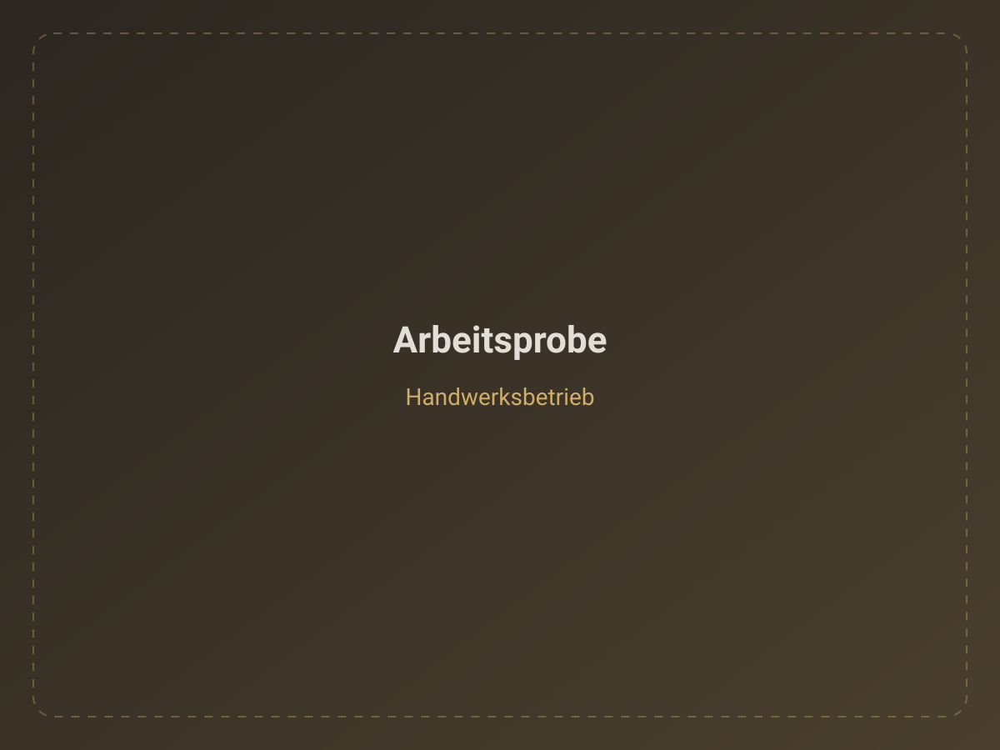
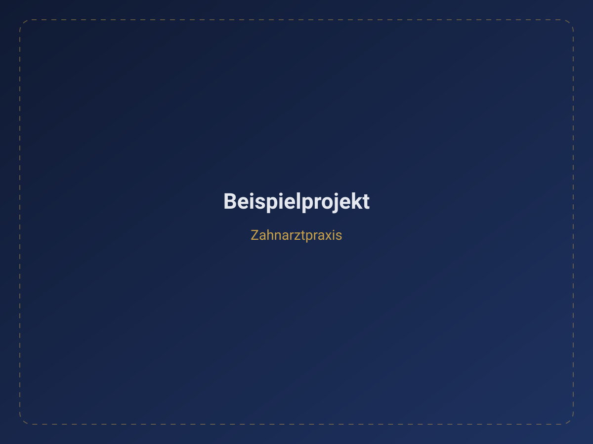

Demo · Handwerk
Website für Handwerker
Klare Leistungen, Local SEO und ein Anfrageformular, das Aufträge planbar macht – statt reiner Empfehlungs-Lotterie.
Ziel: planbare, qualifizierte Anfragen
Web- & KI-Agentur · Würzburg & Regensburg
EKY Media baut Websites, KI-Assistenten und lokale Sichtbarkeit für Unternehmen in Bayern – individuell entwickelt, ohne Baukasten, ohne Umwege.
Kommt Ihnen das bekannt vor?
01 Leistungen
Website, KI und Sichtbarkeit greifen ineinander – Sie starten mit dem, was den größten Hebel hat.
Individuell entwickelt. Auf Anfragen gebaut. Kein Baukasten, kein Theme – Ihre Website als Vertriebsinstrument.
Lohnt sich, wenn: Besucher da sind, aber kaum jemand anfragt – oder der Auftritt Ihrer Arbeit nicht mehr gerecht wird.
Digitale Assistenten für wiederkehrende Aufgaben. Keine Anfrage geht verloren, weniger bleibt liegen.
Lohnt sich, wenn: Anrufe in Stoßzeiten verloren gehen oder Angebote zu lange dauern. KI ist bei uns Werkzeug, kein Selbstzweck.
Gefunden werden, wo Ihre Kunden suchen: lokale Google-Suche, Social Media, KI-Suchsysteme.
Lohnt sich, wenn: der Wettbewerb in der lokalen Suche vor Ihnen steht – oder Ihre Inhalte in KI-Antworten nicht vorkommen.
Unsicher, welcher Baustein zuerst dran ist? Die kostenfreie Analyse zeigt es – 30 Minuten, ohne Verpflichtung.
Kostenfreie Analyse sichern02 Referenzen
Demo-Konzepte aus unseren Schwerpunktbranchen – so bauen wir. Echte Kundenprojekte zeigen wir Ihnen im Gespräch.

Demo · Handwerk
Klare Leistungen, Local SEO und ein Anfrageformular, das Aufträge planbar macht – statt reiner Empfehlungs-Lotterie.
Ziel: planbare, qualifizierte Anfragen

Demo · Medizin
Praxiswebsite mit klarer Patientenführung und Terminstruktur – Vertrauen entsteht vor dem ersten Besuch.
Ziel: einfachere Terminbuchung

Demo · Gastronomie & Hotel
Digitale Speisekarte, Reservierungs-CTA und Direktbuchung – weniger Abhängigkeit von Plattform-Provisionen.
Ziel: mehr direkte Buchungen

Demo · Mittelstand & B2B
Erklärungsbedürftige Leistungen klar strukturiert, mit Referenzaufbau und geführter Angebotsanfrage.
Ziel: strukturierte B2B-Anfragen
Demo · KI
Nimmt Anrufe rund um die Uhr an, qualifiziert Anliegen vor und leitet Termine weiter – auch nach Feierabend.
Ziel: kein verpasster Anruf
Demo · Local SEO
Google-Unternehmensprofil, Bewertungsstruktur und lokale Inhalte – sichtbar bei „Branche + Stadt“.
Ziel: vorn in der lokalen Suche
Hinweis: Es handelt sich um Konzepte und Demos ohne erfundene Kennzahlen. Kundenreferenzen stellen wir auf Anfrage persönlich vor.
03 Branchen
04 Prozess
Wir prüfen Zielgruppe, Website, Angebot, Sichtbarkeit und Anfragewege – und sagen ehrlich, was den größten Hebel hat.
30 Minuten · kostenfreiStruktur, Inhalte, Conversion-Pfade, SEO/GEO-Fundament und sinnvolle Automatisierungen werden festgelegt.
Klares Angebot mit FestumfangDesign, Entwicklung, Texte und Technik – sauber umgesetzt und gemeinsam abgenommen. Dann: Launch.
Ein Ansprechpartner, kurze WegeNach dem Launch verbessern wir Sichtbarkeit, Anfragen und Prozesse laufend weiter – auf Wunsch mit Betreuung.
Optional · modular erweiterbarWarum EKY Media
Eine Website kann heute fast jeder liefern. Der Unterschied: Wir bauen sie als Vertriebsinstrument – nicht als Pflichtprogramm.
Qualität im Detail
Finale Rechtstexte sollten bei Bedarf juristisch geprüft werden – wir liefern die saubere Grundlage.
Details: Erklärung zur Barrierefreiheit
Über EKY Media
Strategie, Webentwicklung, KI und Content – verbunden zu einem System. Für Sie bleibt es einfach: ein Kontakt, ein Prozess, ein Ziel.
Ihr Ansprechpartner für neue Projekte, Analyse und Umsetzung. Klare Angebote, direkte Kommunikation, Lösungen, die geschäftlich Sinn ergeben.
KI-Telefonassistenten, Chatbots, Workflows und Automatisierungen – abgestimmt auf die Abläufe Ihres Unternehmens.
Content-Strukturen und Social-Media-Systeme, die zur Positionierung passen – und im Alltag durchhaltbar sind.
FAQ
EKY Media ist eine Web- und KI-Agentur aus Würzburg und Regensburg. Wir bauen individuelle Websites, richten KI-Telefonassistenten und Chatbots ein, automatisieren Abläufe und sorgen für lokale Sichtbarkeit – alles aus einer Hand, mit einem festen Ansprechpartner.
Vor allem für Handwerksbetriebe, Zahnarztpraxen, Gastronomie, Hotels, lokale Dienstleister, Kanzleien und mittelständische B2B-Unternehmen – in Würzburg, Regensburg, ganz Bayern und deutschlandweit.
Jedes Projekt wird individuell kalkuliert. Nach einer kostenfreien Analyse erhalten Sie ein transparentes Angebot mit klar definiertem Leistungsumfang. So zahlen Sie nicht für Pakete, die Sie nicht brauchen, sondern für die Lösung, die zu Ihrem Unternehmen passt.
Nein. Unsere Standorte liegen in Würzburg und Regensburg, betreut werden Unternehmen in ganz Bayern und deutschlandweit – per Videocall, Telefon und klar strukturierter Projektkommunikation.
Nein, das sind optionale Module. Viele Projekte starten mit Website und Local SEO – KI und Automatisierung ergänzen wir nur dort, wo sie wirklich Aufwand sparen oder Anfragen sichern.
Eine fokussierte Unternehmenswebsite ist häufig in wenigen Wochen online. Umfangreichere Systeme mit Automatisierung und Content brauchen entsprechend länger – den konkreten Zeitplan legen wir verbindlich im Angebot fest.
Ja. Wir analysieren den bestehenden Auftritt und entscheiden gemeinsam, ob eine gezielte Überarbeitung oder ein Neuaufbau wirtschaftlicher ist.
Ja. Projekte werden DSGVO-orientiert umgesetzt – ohne unnötige externe Skripte, mit Consent-Logik nur dort, wo sie nötig ist. Barrierefreiheit nach WCAG 2.2 AA ist der Zielstandard.
Ja, das ist der häufigste Weg. Die Systeme sind modular: Start mit Website und lokaler Sichtbarkeit, später KI-Bausteine, Automatisierung oder Social Media ergänzen – ohne Neuaufbau.
In rund 30 Minuten prüfen wir Auftritt, Sichtbarkeit und Anfragewege. Sie erhalten eine ehrliche Einschätzung, welche Schritte den größten Hebel haben – und im Anschluss ein klares Angebot. Ohne Verpflichtung.
Kontakt
30 Minuten, eine ehrliche Einschätzung: Wo steht Ihr Unternehmen digital – und was bringt jetzt am meisten?
EKY Media · Würzburg & Regensburg, Bayern